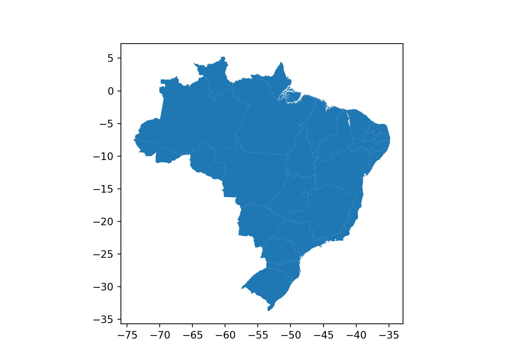
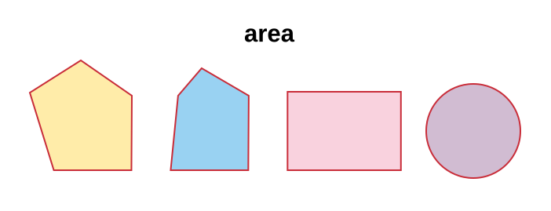
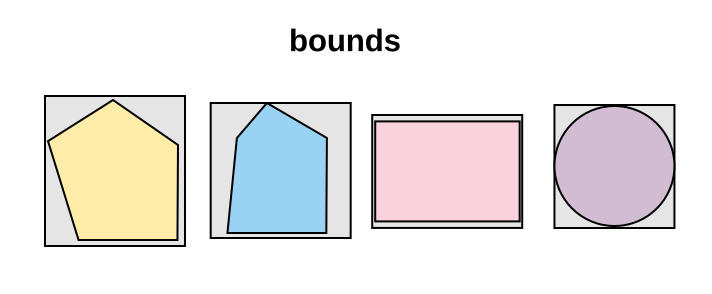
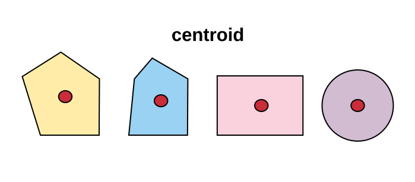
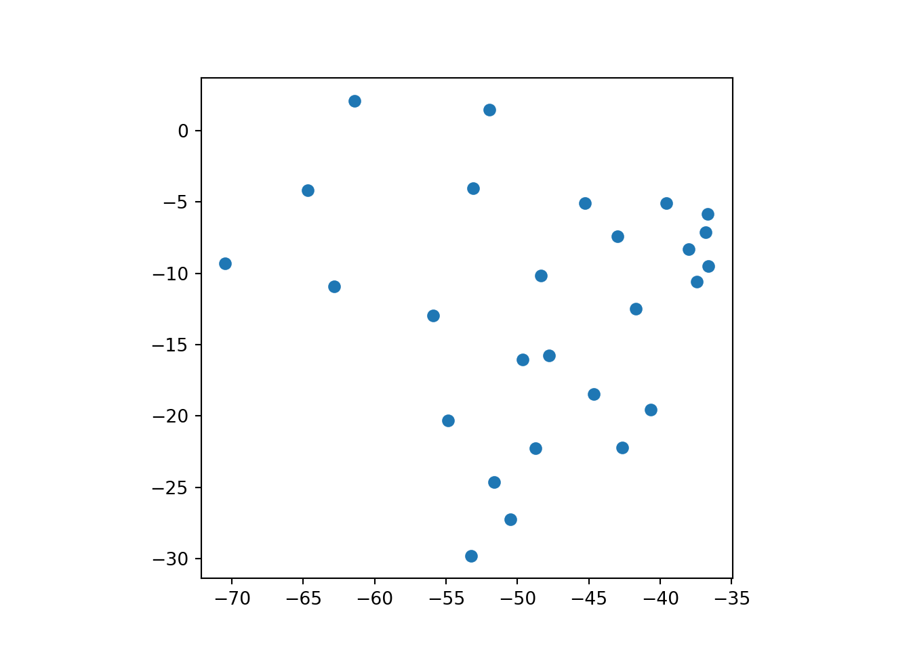
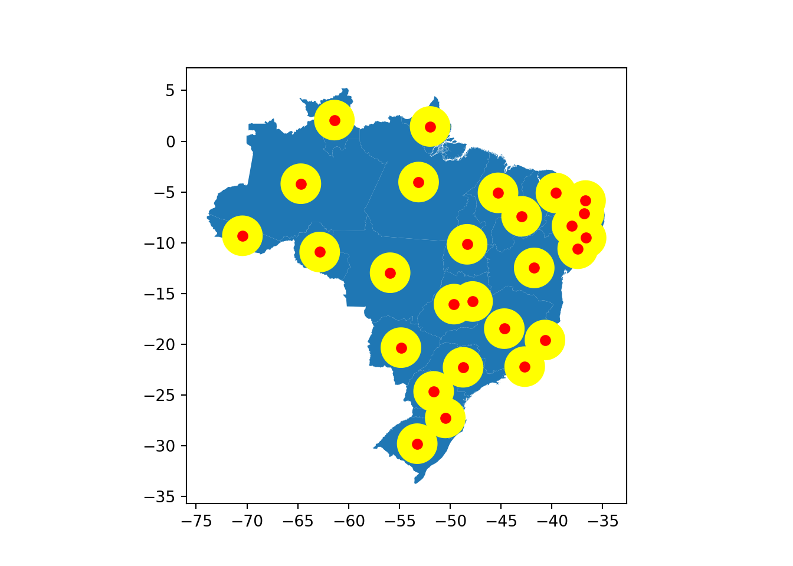
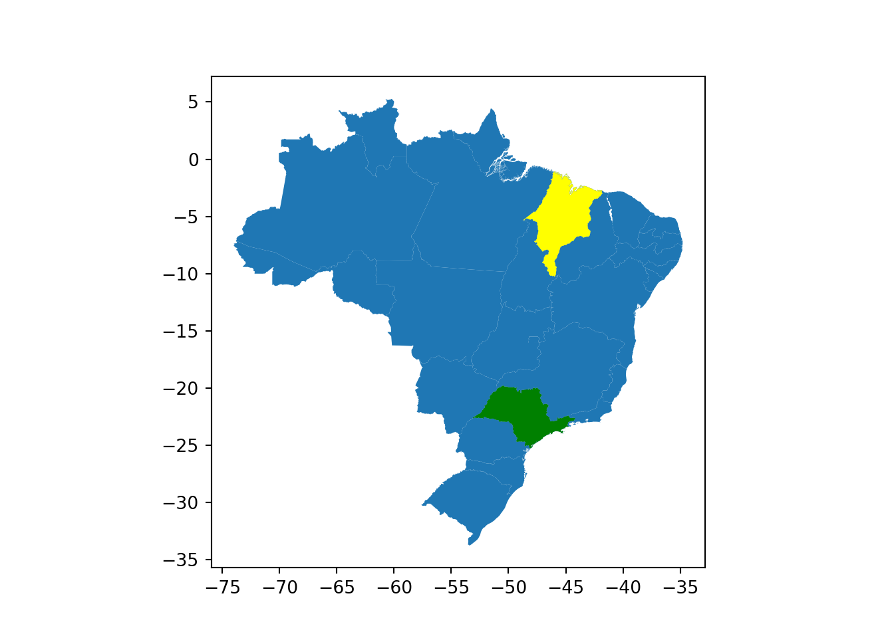
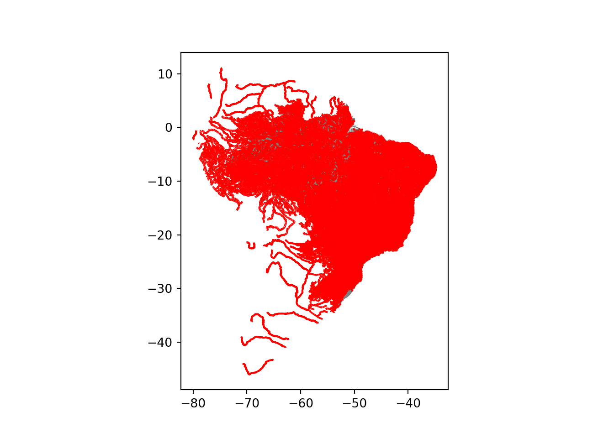
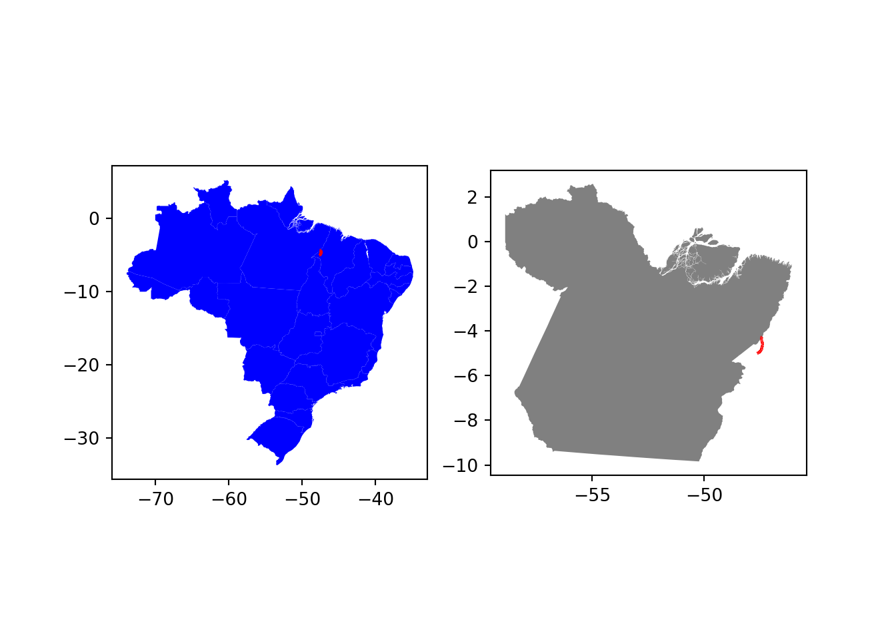

3 Python ✨
Python é uma linguagem de programação versátil, multiparadigma, que permite aos desenvolvedores criar rápidas soluções para seus problemas sem grandes preocupações com a sintaxe e formas de uso da linguagem.
Tais características fizem Python alcançar os mais variados nichos de aplicação. Por ser uma linguagem geral para atingir tais nichos, foram criadas pela comunidade de Python diversas bibliotecas, todas seguindo a ideia da simplicidade de aplicação e prototipação da linguagem. É neste contexto que surge o GeoPandas, que fornece extensões de uso espacial para uma biblioteca de análise de dados muito conhecida na comunidade Python, o Pandas.
Desta forma, este capítulo busca explicar as principais formas de utilização do GeoPandas. Por ser baseada no Pandas, há uma pequena seção que trata sobre o uso básico da linguagem, mas é recomendado que o leitor também conheça tal biblioteca, para isto, existe o curso de introdução à análise de dados, que explica os principais conceitos de utilização do Pandas, não deixe de conferir!
3.1 Pandas 🐼
Com a necessidade de facilitar todo o processo de análise de dados, através de uma linguagem simples e amigável, a comunidade Python criou o Pandas, uma biblioteca que disponibiliza métodos de alto nível para a manipulação, processamento e análise dos mais variados tipos de dados.
Através dos métodos desta biblioteca é possível aplicar todo o ciclo de análise de dados, este indo desde a coleta até o processamento e análise. Para realizar tais atividades, o pandas disponibiliza diversas estruturas de dados, sendo as Series e os DataFrames as principais.
Cada uma dessas estruturas de dados, trata especificamente de uma forma de realizar a abstração do formato dos dados em código, isto faz com que seja necessário o entendimento das principais diferentes entre cada uma delas, para que seja possível realizar sua correta aplicação. Vamos buscar comparar cada uma dessas estruturas para entender suas diferenças.
As Series são estruturas de dados unidimensionais, possuindo apenas uma dimensão que pode ser manipulada, tal dimensão sendo chamada de índice. Já os DataFrames apresentam duas dimensões para a manipulação.
Estas características, na prática, indicam que, as Series apenas representar vetores, enquanto os DataFrames podem representar matrizes de N-Dimensões. Para esta ideia ficar clara, vejamos a Figura abaixo.

Perceba que, as Series possuem o campo para o armazenamento dos dados (Representado em Azul), e o índice (Representado em roxo), não podendendo ser adicionado nenhum outro campo, isto faz com que, todos os dados tenham de ser armazenados em apenas uma coluna, em várias linhas.
Para o DataFrame o cenário apresentado na Figura é diferente, além dos índices, há também as colunas (Representada em vermelho), o que permite que dentro desta estrutura existam não só um conjunto de linhas, como as Series mas sim um conjunto de colunas, onde cada uma dessas possuem várias linhas. Na prática o que fica subentendido é que, os DataFrames são um conjunto de Series.
Isto ocorre já que, cada uma das colunas criadas dentro do DataFrame são Series, o que acaba gerando um efeito muito interessante na API do Pandas, boa parte dos métodos disponíveis para as Series também estão presentes nos DataFrames. Vamos ver alguns exemplos em código para fixar a diferença entre essas duas estruturas de dados.
3.1.1 Manipulação de dados
Vamos começar criando uma Series.
Pronto! Acabamos de criar uma Series com uma lista de valores, vejamos como ela está sendo representada.
## 0 1
## 1 2
## 2 3
## 3 4
## 4 5
## dtype: int64A representação está da mesma forma que vimos antes. Vamos agora fazer uma pequena manipulação dos dados, para isto, utilizaremos os métodos loc e iloc disponíveis dentro do objeto Series gerado, onde o método loc busca o índice com o nome inserido e o iloc busca o índice com a posição inserida. A assinatura de cada um dos métodos está descrita abaixo. Lembre-se que este método está presente tanto na classe Series como na classe DataFrame.
| DataFrame | Series |
|---|---|
| .loc[linha, coluna] | .loc[linha] |
| .iloc[linha] | .iloc[linha] |
Antes de fazermos o teste destes métodos, vamos alterar o índice da nossa Series.
## RangeIndex(start=0, stop=5, step=1)O atributo index devolve os elementos que estão no índice, para fazer sua mudança, basta realizar uma atribuição, veja.
## Index(['um', 'dois', 'tres', 'quatro', 'cinco'], dtype='object')Fizemos esta mudança, para que cada um dos métodos loc e iloc seja mais simples de entender. Certo, vamos começar buscando a linha que tenha o nome dois.
## 2Agora vamos buscar a linha que está na posição dois.
## 2Percebeu? Temos o mesmo resultado, muito interessante não ? Além disso ainda posso aplicar filtros sob os dados,utilizando o conceito de indexação booleana, onde através de um vetor de VERDADEIRO e FALSO é possível selecionar as linhas.
Vamos buscar somente os valores que são acima de três.
## quatro 4
## cinco 5
## dtype: int64Dica: O que ocorre nesta parte é, dentro das chaves de
sr(sr[]) é passado a expressãosr > 3que devolve uma lista de verdadeiros e falsos, fazendo assim o filtro.
Muito interessante! Mas até aqui trabalhamos com apenas uma dimensão, vamos tentar acrescentar mais, para isto, primeiro vamos criar uma matriz.
A matriz criada é representada por uma lista de listas. Vamos tentar criar uma Series com esta matriz.
## 0 [1, 2, 3]
## 1 [4, 5, 6]
## dtype: objectEita! Perceba que, em cada linha há uma lista de valores, o que é ruim! Já que a manipulação fica difícil (Tenta fazer uma indexação booleana, vai falhar 😢).
Para este caso, existem os DataFrames! Vamos começar criando um com a mesma matriz gerada anteriormente.
## 0 1 2
## 0 1 2 3
## 1 4 5 6Opa! Agora o cenário é outro, conseguimos colocar cada um dos valores em seu devido lugar. Perceba que a representação mudou bastante, aqui temos várias colunas de dados, e mesmo assim, todos os métodos já apresentados até aqui funcionam. Vai lá, tenta!
Uma coisa importante sobre os DataFrames são suas colunas, para acessar elas podemos fazer da seguinte forma.
## 0 1
## 1 4
## Name: 0, dtype: int64Viu! Estamos acessando a primeira coluna, se fizermos a mesma coisa, com a segunda também vai funcionar (Tenta inserir o número 1, para você ver o que acontece).
Dica: Ao fazer df[0], estamos buscando o “nome” da coluna, e não sua posição
Da mesma forma que eu podemos recuperar o índice com o atributo index podemos recuperar as colunas com o atributo columns
## RangeIndex(start=0, stop=3, step=1)Para fazer a mudança dos nomes de cada coluna a mesma regra do index é válida.
## Index(['col1', 'col2', 'col3'], dtype='object')Vamos recuperar a primeira coluna novamente
## 0 1
## 1 4
## Name: col1, dtype: int64Assim, fica mais fácil entender que, quando se trata de colunas, estamos buscando os nomes, e não simplesmente as posições.
Bom, agora que já entendemos toda a utilização básica do Pandas, vamos começar a falar um pouco sobre o GeoPandas 💜
3.2 GeoPandas 🌎🐼
Com o entendimento do que é a biblioteca Pandas, suas estruturas de dados e principais características, o estudo do GeoPandas pode ser iniciado. Mas o que é o GeoPandas ?
GeoPandas é um projeto open-source que busca facilitar o trabalho com dados vetoriais em Python, para isto, tem como base as estruturas de dados do Pandas
Desta forma, a ideia básica por trás do GeoPandas é adicionar o suporte a manipulação de dados espaciais as estruturas de dados do Pandas, e com isto prover formas de manipulação simples e direta a tais dados.
Para fazer isto, o GeoPandas utiliza estruturas de dados geométricas implementadas pela biblioteca Shapely dentro das Series e dos DataFrames. Com esta adição, duas estruturas de dados surgem, as GeoSeries e os GeoDataFrames.
Este conceito pode ser melhor entendido com a observação da Figura abaixo.
Perceba que, há a mesma estrutura que foi apresentada na seção anterior, com as geometrias sendo o diferencial nas estruturas de dados.
Na prática o que ocorre é, todas as formas de manipulação geométricas, que como citadas são implementadas com o Shapely, são implementadas em uma classe GeoPandasBase que é extendida pelas GeoSeries e GeoDataFrames, da mesma forma, essas também extendem as estruturas de dados equivalentes do Pandas, veja a Figura abaixo.
Como a GeoSeries e os GeoDataFrames são especializações diretas das Series e dos DataFrames as mesmas características são mantidas, onde, respectivamente, um armazena apenas uma coluna de valores, tendo uma dimensão de manipulação e o outro armazena diversas colunas com duas dimensões de manipulação, da mesma forma como apresentado na seção anterior.
Para fixar o funcionamento de cada uma dessas estruturas, vamos fazer alguns testes com a API do GeoPandas.
3.2.1 GeoSeries e GeoDataFrames
Para começar os testes, vamos importar a biblioteca de geometrias, Shapely e o GeoPandas.
Agora, vamos criar uma GeoSeries.
Dica: A geometria criada não possui qualquer tipo de referência espacial, portanto representa apenas um ponto no plano cartesiano.
Veja que acabamos de criar uma GeoSeries que armazena uma geometria de ponto, vamos visualizar o objeto criado.
## 0 POINT (1.00000 1.00000)
## dtype: geometryA forma é exatamente a mesma de uma Series. Vamos criar um novo objeto com mais geometrias inseridas.
gsr = gpd.GeoSeries([
shapely.geometry.Point(1, 1),
shapely.geometry.Point(2, 2),
shapely.geometry.Point(4, 3)
])
print(gsr)## 0 POINT (1.00000 1.00000)
## 1 POINT (2.00000 2.00000)
## 2 POINT (4.00000 3.00000)
## dtype: geometryCaso eu queira visualizar não só a tabela, mas sim a representação das geometrias criadas no espaço, é possível utilizar o método plot.
gsr.plot()## <matplotlib.axes._subplots.AxesSubplot object at 0x0000028127D5D0B8>Mas as GeoSeries podem ser limitadas em alguns casos, imagine que para a realização de um estudo seja necessário não só a geolocalização ou a representação geométrica no espaço, mas também características do ambiente, qualquer tipo de informação que não a espacial. Nestes casos podemos utilizar os GeoDataFrames que além de colunas de geometria permitem o armazenamento de outras informações, isto por permitir multiplas colunas. Vamos criar um para fazer testes.
gdf = gpd.GeoDataFrame({
'atributo_a': [10, 11, 12],
'geometria': [
shapely.geometry.Point(1, 1),
shapely.geometry.Point(2, 2),
shapely.geometry.Point(4, 3)
]
})Visualizando o resultado
## atributo_a geometria
## 0 10 POINT (1 1)
## 1 11 POINT (2 2)
## 2 12 POINT (4 3)Agora as geometrias passam a ser vinculadas com outros valores, o que pode ser muito útil em vários cenários. Até aqui foram criadas geometrias sem nenhum tipo de ligação com o mundo real, então, vamos agora trabalhar um pouco com dados que façam esta representação, para isto, vejamos como carregar dados espaciais com o GeoPandas.
3.2.2 Leitura e escrita de dados
Além de todas as características citadas até aqui, o GeoPandas ainda ajuda na leitura e na escrita de dados vetoriais, tudo seguindo o padrão de facilidade de uso do Pandas.
Para realizar essas operações o GeoPandas utiliza como base a biblioteca Fiona, que traz suporte a leitura e escrita de uma enorme variedade de formatos vetoriais, sendo alguns deles:
- GeoJSON;
- GPSTrackMaker;
- ESRI Shapefile;
- FileGDB;
- OpenFileGDB.
Além destes formatos a biblioteca aceita vários outros, para a lista completa de formatos suportados, consulte a documentação do Fiona.
Para fazer alguns testes utilizando as funcionalidades de leitura dos dados, vamos carregar um dado vetorial, dos estados do Brasil que estão armazenados em um shapefile.
Estes dados estão disponíveis no repositório do curso.
Com os dados carregados, vamos visualizar qual foi a estrutura gerada ao carregar os dados.
## <class 'geopandas.geodataframe.GeoDataFrame'>Um GeoDataFrame! Isto é feito por padrão pela biblioteca, assim, independente do formato de entrada, o GeoPandas busca inserir os dados dentro de um GeoDataFrame. Certo, vamos olhar então o que está dentro deste objeto.
## ESTADOS REGIAO ... UF geometry
## 0 Acre Norte ... AC POLYGON ((-73.80098 -7.11145, -73.74084 -7.143...
## 1 Alagoas Nordeste ... AL MULTIPOLYGON (((-36.39119 -10.50082, -36.39864...
## 2 Amapá Norte ... AP MULTIPOLYGON (((-51.37380 -0.37053, -51.37337 ...
## 3 Amazonas Norte ... AM POLYGON ((-73.80098 -7.11145, -73.80106 -7.111...
## 4 Bahia Nordeste ... BA MULTIPOLYGON (((-46.32975 -13.25248, -46.33072...
##
## [5 rows x 5 columns]É possível perceber neste resultado que, ao carregar os dados, as representações espaciais presentes no arquivo, foram inseridas em uma coluna chamada geometry e que, além dessa coluna, existem outras que vinculam múltiplas informações a cada uma das representações espaciais presentes no arquivo.
Lembre-se, o método
headé herdado do Pandas, ele possibilita a visualização das linhas iniciais da tabela de dados.
A representação acima não nos mostra todas as colunas de informações que temos no conjunto de dados carregados, para saber quais são todas elas, utilizaremos o atributo columns.
## Index(['ESTADOS', 'REGIAO', 'COD_UF', 'UF', 'geometry'], dtype='object')Olha que interessante! Para cada estado, há seu nome, a região a que pertence, sua Unidade da Federação (UF) e o código desta UF. Agora que já sabemos como estão nossos dados, vamos voltar um pouco na coluna geometry.
## 0 POLYGON ((-73.80098 -7.11145, -73.74084 -7.143...
## 1 MULTIPOLYGON (((-36.39119 -10.50082, -36.39864...
## 2 MULTIPOLYGON (((-51.37380 -0.37053, -51.37337 ...
## 3 POLYGON ((-73.80098 -7.11145, -73.80106 -7.111...
## 4 MULTIPOLYGON (((-46.32975 -13.25248, -46.33072...
## Name: geometry, dtype: geometryEntenda, a geometria escolhida para representar cada um dos estados do Brasil foi o poligono, e isto é possível de visualizar na coluna geometry. Outro fato importante sobre esta coluna é que, ela não precisa ter este nome, ele é definido automaticamente pelo GeoPandas para que as coisas sejam padronizadas e fiquem mais simples, mas, caso eu queira alterar, posso fazer isto facilmente da seguinte forma.
Ao fazer isto, vamos visualizar as colunas do GeoDataFrame alterado.
## Index(['ESTADOS', 'REGIAO', 'COD_UF', 'UF', 'geometria'], dtype='object')Mas, e se nos dados que eu estiver carregando existirem mais de uma coluna de representações espaciais, como o GeoPandas entende qual deve ser utilizada? Bem, por padrão ele escolhera a primeira delas e a tratará como a coluna geometry do conjunto de dados, porém se eu quiser fazer a alteração, também é possível.
Primeiro, vamos aprender a identificar como o GeoPandas mostra a coluna que ele está utilizando como padrão, para isto o atributo geometry é utilizado.
## 0 POLYGON ((-73.80098 -7.11145, -73.74084 -7.143...
## 1 MULTIPOLYGON (((-36.39119 -10.50082, -36.39864...
## 2 MULTIPOLYGON (((-51.37380 -0.37053, -51.37337 ...
## 3 POLYGON ((-73.80098 -7.11145, -73.80106 -7.111...
## 4 MULTIPOLYGON (((-46.32975 -13.25248, -46.33072...
## Name: geometria, dtype: geometryEste atributo devolve os dados da coluna padrão de geometrias. Vamos ver qual é o nome da coluna de onde ele retira tais dados.
## geometriaO nome é exatamente o mesmo da coluna que renomeamos! Vamos trocar esta coluna padrão, para fazer este teste, vou duplicar a coluna que contém as geometrias, porém cada uma terá um nome.
## Index(['ESTADOS', 'REGIAO', 'COD_UF', 'UF', 'geometria', 'geometria_dois'], dtype='object')Feito isto, vamos alterar a coluna padrão de geometrias
Ao visualizar o resultado, percebemos que a mudança foi realizada com sucesso.
## geometria_doisA diferença entre o método
rename_geometryeset_geometryestá no ponto em que, aset_geometryaltera a coluna que está sendo considerada como padrão para geometrias, equanto arename_geometryaltera o nome da coluna padrão de geometrias.
Por fim, vamos visualizar a disposição destes dados em uma figura, para isto, utilizamos o método plot.
gdf.plot()## <matplotlib.axes._subplots.AxesSubplot object at 0x0000028127D8C160>
O ponto a ser entendido do método plot é que, ele utiliza a coluna de geometrias padrão para gerar a figura, então, caso haja alguma inconsistência neste coluna este método terá problemas. Esta lógica se aplica a todos os outros métodos do GeoPandas que utilizam a representação espacial para fazer as operações.
Vamos salvar os resultados em um arquivo shapefile, para isto, façamos a utilização do método to_file.
del gdf["geometria"] # Removendo coluna extra de geometrias
gdf.to_file('tmp/estados_do_brasil_editado.shp')Não deixe de consultar a documentação do Pandas e do GeoPandas, por conta das bibliotecas trabalharem juntas, muitos formas de dados podem ser escritos e tratados, no GeoPandas é possível até mesmo ler dados diretamente de um banco de dados espacial (PostGres com PostGIS).
3.2.3 Manipulação geométrica
O GeoPandas oferece diferentes métodos para a manipulação dos dados espaciais carregados, esta seção fará a apresentação de alguns destes métodos.
É importante lembrar que, todos estes métodos estão orientados a coluna de geometria padrão, vista na subseção anterior.
As operações apresentadas nas subseções a seguir, são representadas por métodos e atributos das GeoSeries e dos GeoDataFrames.
3.2.3.1 area
Vamos começar com as operações de área, que de forma análoga ao nome, cálcula a área da geometria em questão. Vejamos a Figura abaixo que faz uma representação desta operação em diferentes formas geométricas.

O resultado da operação, devolve o cálculo da área, representado em vermelho na Figura acima. Para exemplificar, vamos utilizar o conjunto de dados dos estados do Brasil
Lembre-se, este conjunto de dados está disponível no repositório do curso
Depois de carregar os dados, vamos utilizar o atributo area, que realiza a operação e devolve a àrea para cada uma das linhas do conjunto de dados
## 0 12.553132
## 1 2.285972
## 2 11.424936
## 3 128.108383
## 4 46.911114
## dtype: float64A área é devolvida na unidade de medida da projeção espacial utilizada no conjunto de dados, estes detalhes serão apresentados nas seções seguintes.
3.2.3.2 bounds
O atributo bounds devolve as coordenadas mínimas e máximas da região coberta pela geometria. Sua representação é feita na Figura abaixo.

Perceba que, para cada figura é criado um retângulo que a envolve (Também chamado de retângulo envolvente) e as coordenadas mínimas e máximas são retiradas desses. Vejamos um exemplo
## minx miny maxx maxy
## 0 -73.990943 -11.144489 -66.619331 -7.111453
## 1 -38.237442 -10.500822 -35.151669 -8.812208
## 2 -54.875779 -1.235830 -49.875779 4.437122
## 3 -73.801055 -9.814097 -56.097385 2.247063
## 4 -46.629029 -18.349041 -37.339928 -8.5322723.2.3.3 centroid
O atributo centroid devolve o ponto central da geometria. Sua representação é feita na Figura abaixo.

O ponto retornado para cada geometria é apresentado em vermelho. Vejamos um exemplo com o GeoPandas.
Se olharmos para o resultado teremos uma GeoSeries com um ponto para cada um dos estados, vamos visualizar estes pontos rapidamente.
centroids_dos_estados.plot()## <matplotlib.axes._subplots.AxesSubplot object at 0x0000028127FE7048>
Para fazermos um pequeno experimento, famos pegar a figura com os estados e fazer seu plot junto com os centroids.
base = estados_do_brasil.plot()
centroids_dos_estados.plot(ax=base, marker="o", color="red")## <matplotlib.axes._subplots.AxesSubplot object at 0x00000281280A92E8>3.2.3.4 buffer
O método buffer cria um circulo entorno de um ponto, e pode ser aplicado em diferentes tipos de análises espaciais. Sua representação é feita na Figura abaixo.
Para testar esta operação, vamos utilizar os centroids extraídos na seção anterior.
Da mesma forma que outros métodos que trabalham com distâncias, os valores dependem diretamente das projeções espaciais utilizadas. Vamos fazer um plot do resultado gerado sob o mapa dos estados do Brasil.
base = estados_do_brasil.plot()
base = buffers.plot(ax = base, color = 'yellow')
# Adicionando os centroids também, para testar =D
centroids_dos_estados.plot(ax = base, color = 'red')## <matplotlib.axes._subplots.AxesSubplot object at 0x000002812925A4A8>
3.2.3.5 envelope
Por fim, o método envelope cria o mesmo retângulo envolve utilizado no atributo bounds, com a diferença que, neste caso a geometria é devolvida. A representação desta operação é feita na Figura abaixo.
Para testar, vamos pegar os buffers gerados anteriormente e então gerar seu retângulo envolvente.
Da mesma forma que nos demais, vamos visualizar o resultado.
base = estados_do_brasil.plot()
envelopes.plot(ax = base, color = 'green')## <matplotlib.axes._subplots.AxesSubplot object at 0x00000281291E05C0>
3.2.4 Seleção e filtro de dados
O GeoPandas ainda fornece métodos para a seleção e filtros de dados baseados na posição espacial. Nesta seção veremos dois desses, que podem ser muito úteis nas mais diversas análises.
3.2.4.1 distance
Vamos começar com o método distance, que calcula a distância entre duas geometrias. Sua operação é representada na Figura abaixo.
Para testar esta operação, vamos carregar dois dados vetoriais, cada um represetando um estado do Brasil.
estado_maranhao = gpd.read_file("../data/2_estado_sp_shape/shape_estado-sp.shp")
estado_saopaulo = gpd.read_file("../data/3_estado_ma_shape/shape_estado-ma.shp")Vamos visualizar os dois juntos. Nesta visualização, para ela ter sentido, abaixo dos estados foi fazer o plot do mapa do Brasil.
base = estados_do_brasil.plot()
base = estado_maranhao.plot(ax = base, color = 'green')
estado_saopaulo.plot(ax = base, color = 'yellow')## <matplotlib.axes._subplots.AxesSubplot object at 0x00000281291A66A0>
Certo, vamos calcular a distância entre cada um deles.
## 0 9.809695
## dtype: float64Feito, com isto tem-se a distância entre as duas geometrias, que neste caso representa os estados do Maranhão e São Paulo. Esta mesma operação pode ser utilizada como uma forma de consulta aos dados, por exemplo, buscar estados que estejam a X de distância de outro.
3.2.4.2 contains
O método contains verifica se uma geometria está contida em outra, sua representação visual é apresentada abaixo .
Vamos fazer um teste da operação com o estado do Amazonas, verificando se sua geometria está contida nas nos dados de estados do Brasil.
Primeiro, vamos retirar do GeoDataFrame as informações do estado do Amazonas, para isto aplicaremos um filtro booleano, herdado do Pandas.
estado_amazonas = estados_do_brasil[estados_do_brasil["ESTADOS"] == "Amazonas"] # Indexação booleanaAgora vamos verificar se o estado está contido em alguma geometria dos estados do Brasil.
amazonas_esta_presente = estados_do_brasil.contains(estado_amazonas)
print(amazonas_esta_presente.head(10))## 0 False
## 1 False
## 2 False
## 3 True
## 4 False
## 5 False
## 6 False
## 7 False
## 8 False
## 9 False
## dtype: boolVeja que em uma das linhas apareceu True, isto indica que a geometria do estado do Amazonas está contida nesta, que se formos olhar a linha do GeoDataFrame com os dados do estado, indica exatamente a linha do estado do Amazonas.
## ESTADOS REGIAO ... UF geometry
## 3 Amazonas Norte ... AM POLYGON ((-73.80098 -7.11145, -73.80106 -7.111...
##
## [1 rows x 5 columns]3.2.4.3 intersects
Por fim, na parte de seleção através dos dados espaciais, vamos testar o método intersects, que verifica se uma geometria faz intersecção com outra. Vale lembrar que, é tido como uma intersecção, quando um objeto cruza de alguma maneira, seu limite e seu interior com outro objeto. A operação pode ser vista abaixo.
Para realizar este teste, vamos carregar um arquivo que contém todos rios do nosso país. E então verificar quais desses fazem intersecção com o estado do Pará.
Antes de continuar, vamos visualizar os dados, junto aos estados do Brasil.
base = estados_do_brasil.plot(color = "gray")
rios_brasil.plot(ax = base, color = 'red')## <matplotlib.axes._subplots.AxesSubplot object at 0x000002812508DB38>
Agora vamos pegar somente o estado do Pará do conjunto de estados e verificar quais rios fazem intersecção com ele.
estado_para = estados_do_brasil[estados_do_brasil["ESTADOS"] == "Pará"]
rios_intersect_para = rios_brasil.intersects(estado_para)
print(rios_intersect_para.head(5))## 0 False
## 1 False
## 2 False
## 3 False
## 4 False
## dtype: boolO resultado é uma lista booleana, desta forma, vamos filtrar o conjunto de dados de rios com este índice, e então verificar quais deles fazem intersecção com o estado do Pará.
Com os dados separados, vamos fazer um plot para melhor visualizar o resultado. Neste plot vamos utilizar o matplotlib, para criar vários subplots.
import matplotlib.pyplot as plt
# Criando figura e os subplots
fig, (ax1, ax2) = plt.subplots(ncols=2)
base = estados_do_brasil.plot(ax = ax1, color = 'blue')
rios_para.plot(ax = base, color = 'red')## <matplotlib.axes._subplots.AxesSubplot object at 0x0000028124DAF240>## <matplotlib.axes._subplots.AxesSubplot object at 0x00000281252F0A20>
Veja que esta operação verificou somente aqueles que fazem intersecção com as fronteiras, não indicando que está contido ou próximo ao estado.
3.2.5 Manipulação de projeções
Uma operação muito importante quando se está trabalhando dados espaciais é a manipulação de suas projeções, estas que como explicado no capítulo anterior, fazem as representações das geometrias no espaço, o GeoPandas fornece um método muito simples para tal operação, o to_crs, que altera a projeção dos dados sem grandes problemas.

Este foi o capítulo sobre GeoPandas e suas facilidades de uso 🌟, não deixe de consultar a documentação oficial e fazer seus testes 💫.